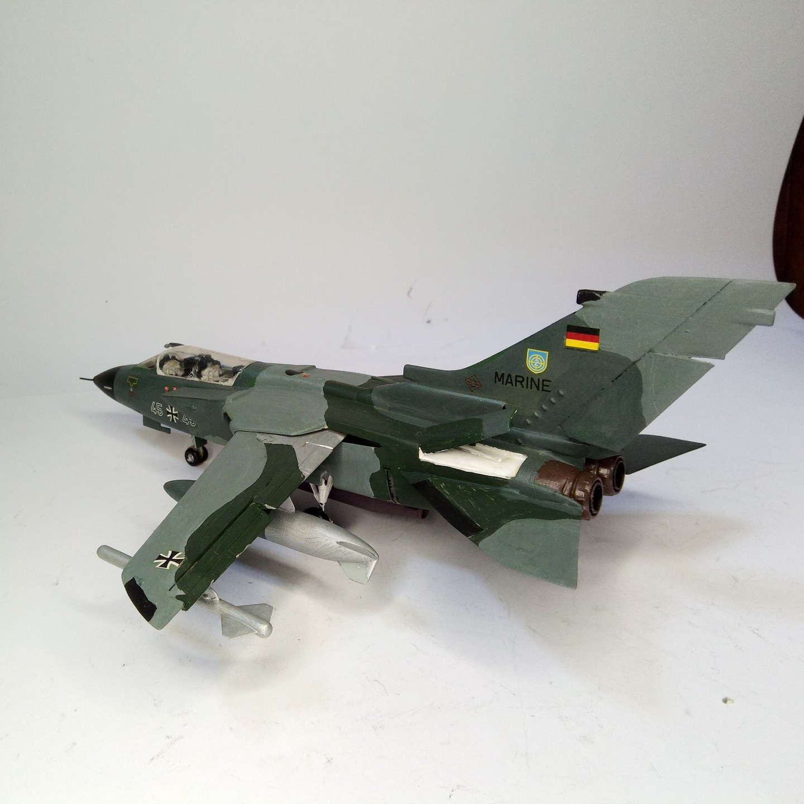
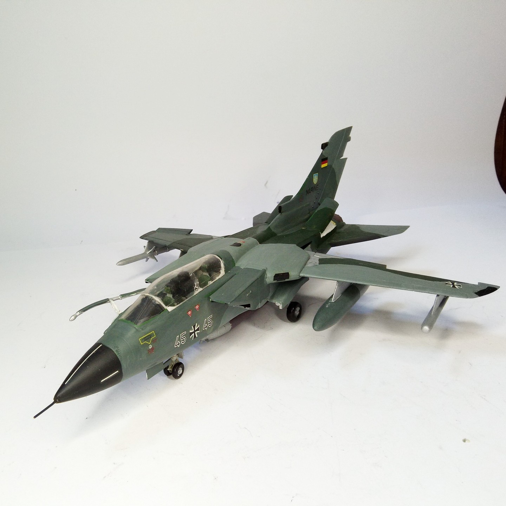

Aerei · scale model archive
Panavia Tornado
Panavia Tornado — Kit: Revell, Scale: 1/72. Model by Franco Donati #1/72 #Revell #Tornado

Photo gallery

English description
Model by Franco Donati
#1/72 #Revell #Tornado
Descrizione italiana
Modello di Franco Donati.